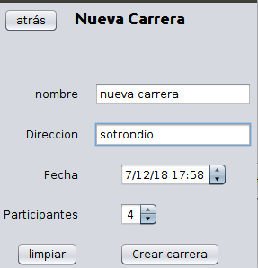

abre un formulario para poder añadir una carrera a la aplicación

abre iniciar carrera en el cual puedes iniciar una carrera sin finalizar y con al menos dos corredores.
abre la pantalla de consultar carreras en la que puedes borrar, modificar, ver los participantes de una carrera entre otras cosas
cierra esta pantalla